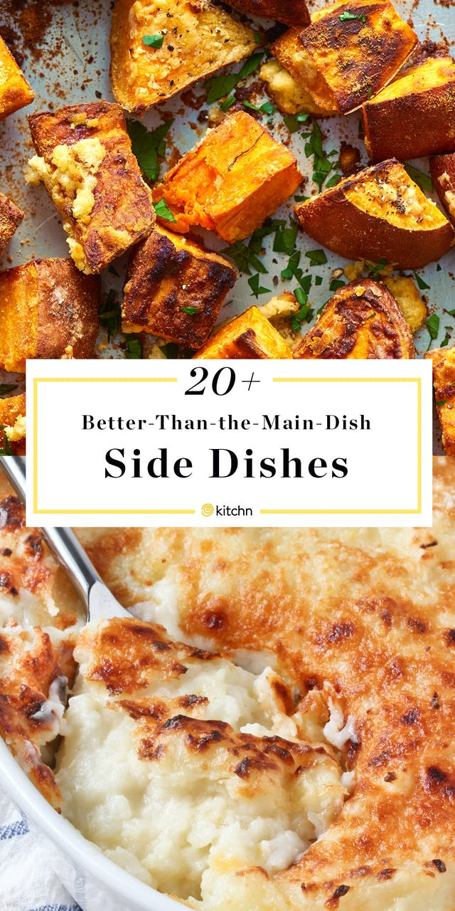
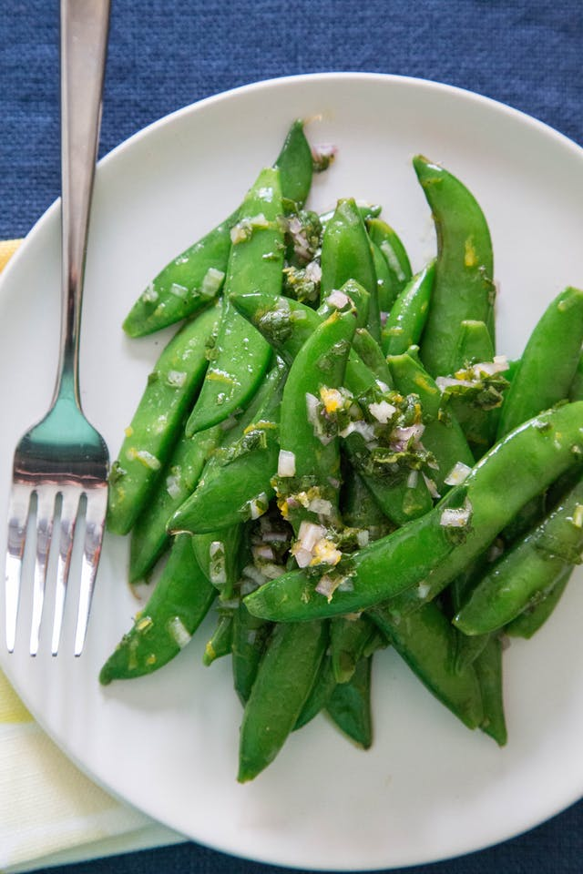
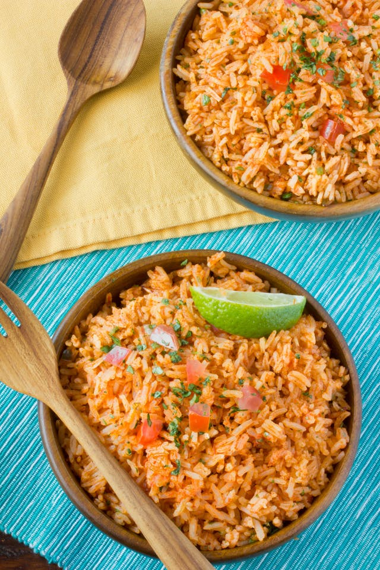
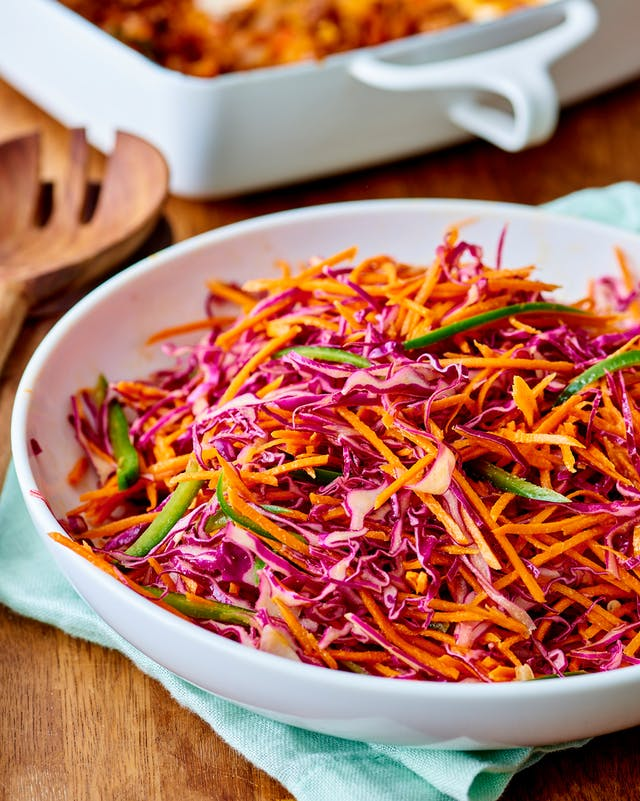
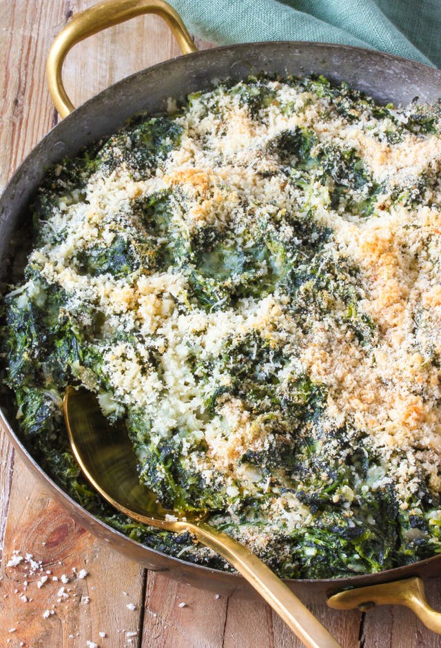

Let's face it — sometimes the side dishes are just better. Yes, chicken is great,
and we'll never say no to a burger, but aren't we really just here for the luscious steak fries,
perfectly crunchy slaw, and irresistible veggie casseroles?
Today we're celebrating the supporting cast of the dinner table
with our 27 favorite scene-stealing side dishes.

(image credit : Shimul)
Potatoes
No matter what variety you pick, this humble root vegetable is super versatile and plays
the perfect starchy supporting role.

Other Crowd-Pleasing Vegetable Sides
By now you already know that a pan of crispy-edged roasted veggies are totally irresistible.
Add one more special twist, like plenty of garlic, some crispy bacon, or sweet and tangy orange
juice, and you're well on your way to the veggies being the stand-out star of the table.

Rice and Grains
Go beyond a plain pot of rice or grains, and I can guarantee
it will be well worth it.

Refreshing Salads and Slaws
If your house is anything like mine, a salad or a simple, crunchy slaw with
dinner is a must. No matter what's in my meal plan, it balances dinner with
something wholesome and refreshing.

Casseroles
Veggie-filled casserole side dishes are always a good idea. You should count
on going back for seconds with all the cozy, comforting recipes in this lineup.